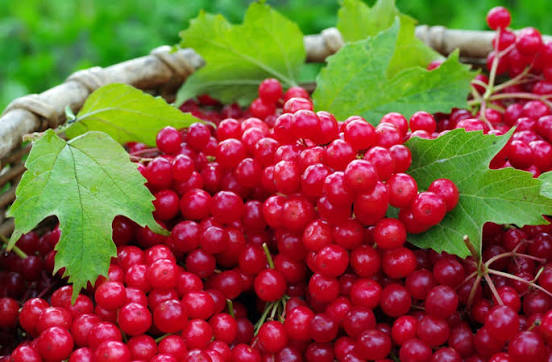

Кущ калини біля материної хати — це не лише
окраса, а й
символ України, наш духовний світ, наша спадщина. Якщо троянди й виноград,
за влучним висловом Максима Рильського, символізують красиве й корисне, то
кущ калини, увібравши обидві ознаки, опредметнює й духовний потяг до своєї
землі, свого оберега, своїх традицій.
